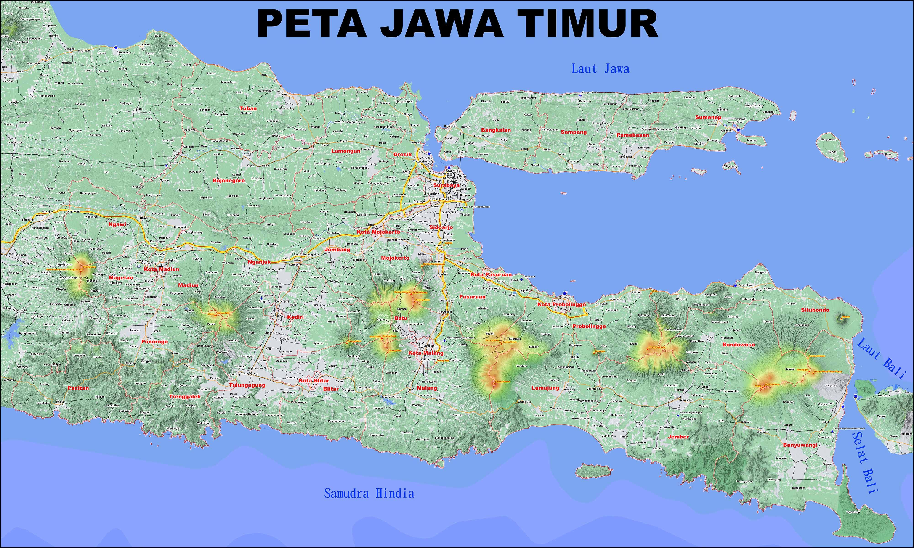
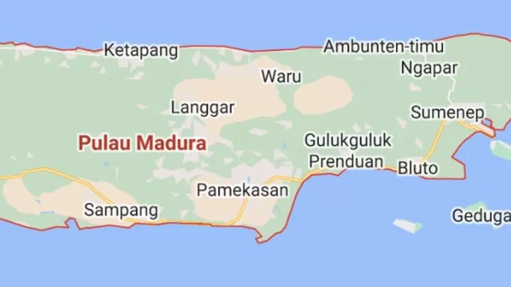
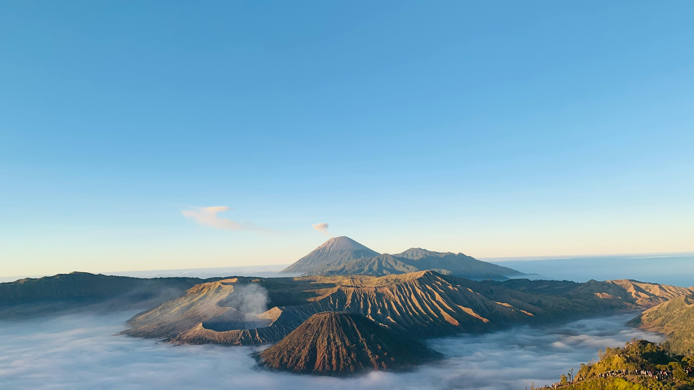

Budaya & Tradisi Lokal Yang Ada Di Jawa Timur
Jawa Timur adalah sebuah provinsi di ujung timur Pulau Jawa, Indonesia, yang beribukota di Surabaya. Provinsi ini adalah yang terluas di Pulau Jawa dan memiliki jumlah penduduk terbanyak kedua di Indonesia, terdiri dari 29 kabupaten dan 9 kota. Jawa Timur dikenal sebagai pusat perekonomian, industri, dan juga kaya akan budaya serta tempat wisata alam.
Upacara Adat
Kasada — Tengger (Gunung Bromo)
Persembahan masyarakat Tengger kepada leluhur,dilakukan tiap tahun dikawah.

Reog Ponorogo
Pertunjukan bertopeng Singo Barong yang sarat simbolisme kepemimpinan dan keberanian.

Larung Sesaji (Pelestarian Laut)
Tradisi nelayan pesisir Jawa Timur untuk menjaga keselamatan dan hasil tangkapan.

Bahasa Daerah
Bahasa Jawa Dialek "Arek" (Surabaya dkk)
Dialek cepat, tegas, dan sering dipakai di wilayah pesisir utara.
Bahasa Madura
Bahasa yang kuat dan khas, ditemui luas di Madura dan pesisir Jawa Timur.
Bahasa Osing (Banyuwangi)
Dialek unik yang kaya kosakata lokal dan pengaruh Jawa—dipertahankan lewat seni dan ritual.
Kuliner Tradisional
Rawon (Surabaya/Malang)
Sup kluwek dengan cita rasa pekat. Disajikan dengan sayuran an sambel.

Rujak Cingur (Surabaya)
Campuran buah & sayur dengan cingur sapi—bumbu petis khas memberi rasa unik.

Pecel Madiun
Sayuran rebus dengan sambal kacang yang aromatik—khas Madiun.

Pariwisata Daerah
Gunung Bromo
Sunrise spektakuler, lautan pasir, dan budaya Tengger.
Kawah Ijen (Blue Fire)
Fenomena api biru yang langka—destinasi alam dan tambang belerang unik.

Pantai Papuma
Pantai eksotis dengan tebing dan formasi karang yang dramatis.